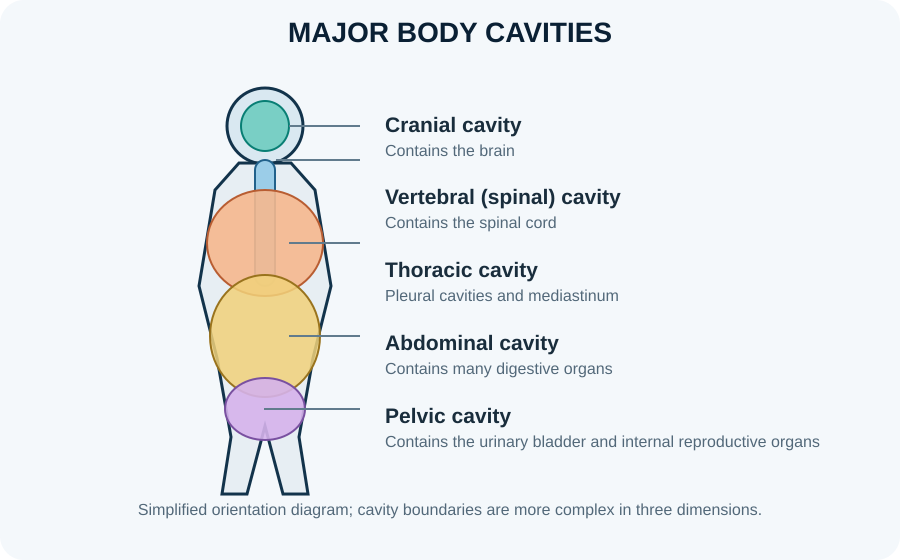

Body divisions, cavities and serous membranes

The body is organised into axial and appendicular divisions and into internal compartments that protect organs while permitting movement and expansion. The dorsal body cavity contains the cranial cavity and vertebral canal. The ventral cavity contains the thoracic and abdominopelvic cavities, separated by the diaphragm. Serous membranes line closed body cavities and cover many organs, with a thin film of fluid reducing friction as organs move.
Learning objectives
- Distinguish the axial and appendicular divisions of the body.
- Identify the major dorsal and ventral body cavities and their principal contents.
- Explain the roles of serous membranes and serous fluid in reducing friction.
- Relate cavity anatomy to the organisation of thoracic and abdominopelvic organs.
High-yield study points
- The cranial cavity contains the brain; the vertebral canal contains the spinal cord and its coverings.
- The thoracic cavity includes the two pleural cavities and the mediastinum; the pericardial cavity surrounds the heart within the mediastinum.
- The diaphragm separates the thoracic cavity from the abdominopelvic cavity and is the principal muscle of quiet inspiration.
- The abdominal and pelvic cavities are continuous; the pelvic cavity contains the urinary bladder, internal reproductive organs and rectum, with contents varying by sex and physiological state.
- Pleura surrounds each lung; pericardium surrounds the heart; peritoneum lines much of the abdominopelvic cavity and covers many abdominal organs.
- A serous membrane has a parietal layer lining the cavity wall and a visceral layer covering the organ; the potential space between them normally contains a small amount of lubricating fluid.
- The retroperitoneal space lies posterior to the parietal peritoneum and contains structures such as most of the kidneys and adrenal glands, much of the pancreas and parts of the duodenum and colon.
- The mediastinum is the central compartment of the thorax between the pleural cavities and contains the heart, great vessels, trachea, oesophagus and other structures.
Clinical connection
Air in the pleural cavity (pneumothorax) can impair lung expansion; fluid in the pericardial cavity can affect cardiac filling if it accumulates under pressure. These are compartment problems, not simply 'fluid around an organ'.
Check your understanding
- Which major cavity contains the brain?
Reveal answer
The cranial cavity.
- Which serous membrane directly covers the lungs?
Reveal answer
The visceral pleura.
- Why is serous fluid useful?
Reveal answer
It reduces friction as organs and body walls move relative to each other.